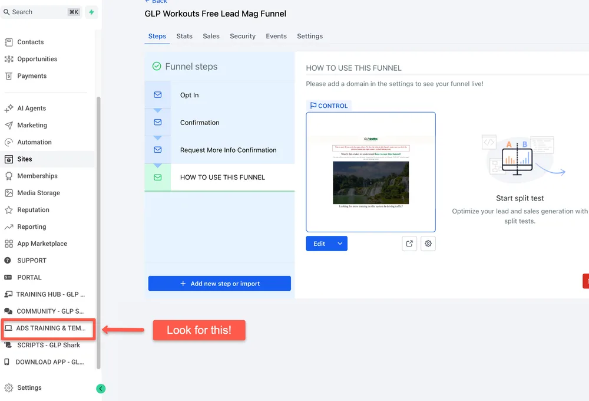

How to use this funnel
What it does, where to post it, and what happens once a lead comes through.

Watch the two short trainings, grab the assets, then start sending traffic.
Natural GLP Foods GuideWhat it does, where to post it, and what happens once a lead comes through.
Exactly how to get eyes on it, in order, starting today.
What to say to leads who come through this funnel, and how to follow up so they answer.
Ready to post graphics built for this funnel. Edit them in Canva, then post.
Every training for your marketing system in one place, not just this funnel.
Done for you ad creative and a launch walkthrough, if your plan includes it.
PRO members: the proven ads for this funnel are already built for you, along with training on exactly how to launch the campaign and generate customer-centric leads. Look in your sidebar for the Ads Training tab.
Not on PRO yet? Upgrade and the ad creative plus the launch training unlock for this funnel.

Sidebar / Ads Training
Upgrade to run ads